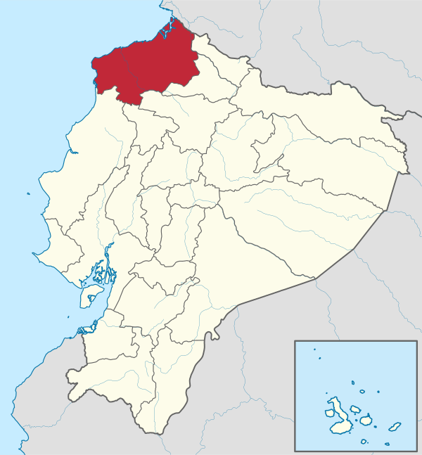
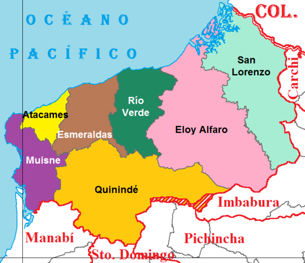

La Provincia de Esmeraldas es una de las 24 provincias que conforman la República del Ecuador.
Esta situada en la zona geográfica conocida como región litoral o costa. Su capital administrativa es la ciudad de Esmeraldas, la cual además es su urbe más grande y poblada.
Ocupa un territorio de unos 14.893 km², siendo la séptima provincia del país por extensión.
Limita al este con Carchi e Imbabura, al sur con Santo Domingo de los Tsáchilas y Manabí, al sureste con Pichincha, al norte con la Provincia de Tumaco-Barbacoas, del departamento de Nariño perteneciente a Colombia, y al oeste y norte con el océano Pacífico a lo largo de una franja marítima de unos 230 kilómetros.
En el territorio esmeraldeño habitan 643.654 personas, según la proyección demográfica del INEC para 2020, siendo la octava provincia más poblada del país.
La Provincia de Esmeraldas está constituida por 7 cantones, con sus respectivas parroquias urbanas y rurales.
Según el último ordenamiento territorial, la provincia de Esmeraldas pertenecerá a una región comprendida también por las provincias de Carchi, Imbabura y Sucumbíos, aunque no esté oficialmente conformada, denominada Norte.
Es conocida como la provincia verde por su gran cantidad de productos agrícolas. Esmeraldas es uno de los más importantes centros administrativos, económicos, financieros y comerciales del Ecuador.
Las actividades principales de la provincia son el comercio, la ganadería, la industria y la agricultura. Gran parte de su economía depende de la exportación de camarón y banano.
Además de este, se produce cacao, tabaco y café. Son importantes la pesca, la industria petroquímica y el turismo.
La provincia de Esmeraldas es conocida, además de por sus hermosas playas, sus paisajes exuberantes y su clima cálido y húmedo, por ser tradicionalmente el territorio afroecuatoriano por excelencia.
Así mismo, las selvas esmeraldeñas son cuna de 3 de las 4 nacionalidades indígenas de la Región Litoral de Ecuador: los cayapas, los épera y los awá.
El área de la provincia fue cuna de culturas como los Atacames, Tolas, Cayapas. La colonización española se dio el 21 de septiembre de 1526, cuando Bartolomé Ruiz echó anclas en la desembocadura de un "río Grande" y denominó al sector como San Mateo, durante ese período la entidad máxima y precursora de la provincia sería el Gobierno de las Esmeraldas.
Después de la guerra independentista y la anexión de Ecuador a la Gran Colombia, se crea la Provincia de Pichincha el 25 de junio de 1824, en la que dentro de sus límites se encuentra el actual territorio esmeraldeño. El 20 de noviembre de 1847 se crea la octava provincia del país, la Provincia de Esmeraldas.

